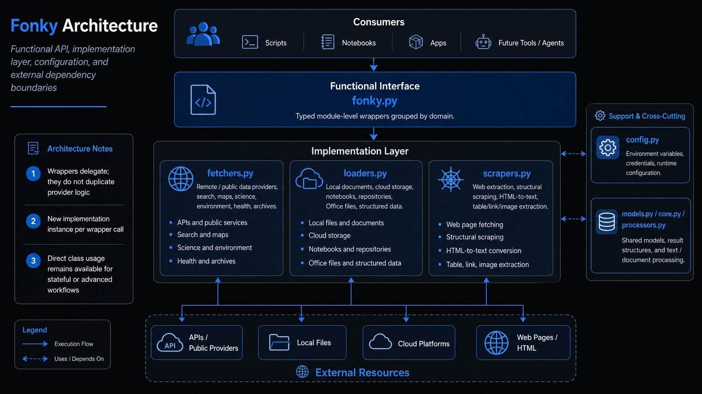

Configuration¶

Fonky centralizes environment-derived credentials and runtime settings inconfig.py. Configuration
is intentionally optional at import time: configure the services you use, not every service Fonky
knows about.
Provider Credentials Used by Current Fonky Capabilities¶
| Variable | Used By | Required When | Value / Format | Purpose |
|---|---|---|---|---|
AIRNOW_API_KEY |
AirNow |
AirNow observations/forecasts | API key string |
Authenticates AirNow requests. |
CENSUS_API_KEY |
CensusData |
Census API use where a key is required or beneficial | API key string |
Authenticates U.S. Census API requests. |
CONGRESS_API_KEY |
Congress |
Congress.gov API calls | API key string |
Authenticates Congress, bill, law, and report retrieval. |
FIRMS_MAP_KEY |
Firms |
NASA FIRMS fire/hotspot retrieval | MAP_KEY string |
Authorizes FIRMS area/point data access. |
GOOGLE_API_KEY |
GoogleSearch / Google integrations |
Google API-backed calls | API key string |
General Google API credential used by supported integrations. |
GOOGLE_CSE_ID |
GoogleSearch |
Google Custom Search | Programmable Search Engine ID |
Identifies the Custom Search Engine to query. |
GOOGLE_WEATHER_API_KEY |
GoogleWeather |
Google Weather calls | API key string |
Authenticates Google Weather requests. |
GOOGLE_ACCOUNT_CREDENTIALS |
Google Drive / GCP integrations |
Service-account based Google workflows | Credential file/path or configured value |
Provides Google account/service credentials. |
GOOGLE_DRIVE_TOKEN_PATH |
Google Drive |
OAuth-backed Google Drive access | Filesystem path |
Locates persisted OAuth token material. |
GOOGLE_DRIVE_FOLDER_ID |
Google Drive |
Default Drive folder workflows | Drive folder ID |
Identifies a default Drive folder. |
GOOGLE_CLOUD_PROJECT_ID |
Google Cloud |
GCP-backed loaders/services | Project ID |
Selects the Google Cloud project. |
NASA_API_KEY |
SpaceWeather / NASA-backed services |
NASA APIs requiring a key | API key string |
Authenticates supported NASA API calls. |
NASA_EARTHDATA_TOKEN |
NASA Earthdata |
Earthdata-protected resources | Bearer token |
Authenticates NASA Earthdata access. |
OPENAQ_API_KEY |
OpenAQ |
OpenAQ air-quality data | API key string |
Authenticates OpenAQ requests where required. |
PURPLEAIR_API_KEY |
PurpleAir |
PurpleAir sensor queries | API key string |
Authenticates PurpleAir API requests. |
SOCRATA_API_KEY |
Socrata / HealthData |
Socrata-backed datasets | Application token/API key |
Provides authenticated/higher-limit Socrata access. |
THENEWSAPI_API_KEY |
TheNews |
TheNewsAPI requests | API key string |
Authenticates news search/headline retrieval. |
OPENSKY_API_CLIENT_ID |
OpenSky |
Authenticated OpenSky workflows | OAuth client ID |
Identifies the OpenSky API client. |
OPENSKY_API_CREDENTIALS |
OpenSky |
Authenticated OpenSky workflows | Credential/secret value |
Supplies OpenSky authentication material. |
O365_CLIENT_ID |
OneDrive / Microsoft 365 |
OneDrive/O365 authentication | Application client ID |
Identifies the Microsoft application. |
O365_CLIENT_SECRET |
OneDrive / Microsoft 365 |
OneDrive/O365 authentication | Client secret |
Authenticates the Microsoft application. |
GEOAPIFY_API_KEY |
Geospatial integrations |
Geoapify-backed geospatial calls | API key string |
Authenticates Geoapify requests where used. |
GEOCODING_API_KEY |
Geocoding integration |
Configured geocoding provider | API key string |
Authenticates configured geocoding requests. |
USGS_API_KEY |
USGS integrations |
USGS endpoints requiring/accepting a key | API key string |
Provides USGS API authentication where applicable. |
Example — Google Custom Search¶
from fonky import fonky
results = fonky.fetch_google_search(
keywords='USGS water quality',
results=10,
site_search='usgs.gov'
)
The underlying search implementation validates provider result-count and pagination bounds before request execution; configuration does not replace provider validation.
Example — NASA FIRMS¶
from fonky import fonky
fires = fonky.fetch_firms(
mode='area',
source='VIIRS_SNPP_NRT',
area_coordinates='world',
day_range=1
)
Example — OneDrive¶
from fonky import fonky
documents = fonky.load_onedrive(
drive_id='drive-id',
folder_path='/Reports',
auth_with_token=True
)
Additional Variables Present in config.py¶
The configuration module also defines settings used by adjacent AI/vector/observability integrations or future workflows. They are not all required by the current fetcher/loader/scraper wrapper scope:
CHROMA_API_KEY, CHROMA_TENET_ID, CLAUDE_API_KEY, DATAGOV_API_KEY, GEMINI_API_KEY, GOOGLE_CLOUD_LOCATION, GOOGLE_GENAI_USE_VERTEXAI, GOVINFO_API_KEY, HEALTHDATA_API_KEY, HUGGINGFACE_API_KEY, IPINFO_API_KEY, LANGSMITH_API_KEY, LLAMACLOUD_API_KEY, LLAMAINDEX_API_KEY, MISTRAL_API_KEY, NEWSAPI_API_KEY, OPENAI_API_KEY, PINECONE_API_KEY, SKY_MAP_TOKEN, WEATHERAPI_API_KEY, XAI_API_KEY.
Do not populate these simply because they exist. Configure a variable when the code path you are using actually consumes it.
Secret Handling¶
- Never commit API keys, OAuth tokens, service-account JSON, or client secrets.
- Prefer environment variables, operating-system secret stores, CI/CD secrets, or cloud secret managers.
- Treat credential-file paths as deployment configuration.
- Do not print credentials in troubleshooting output.